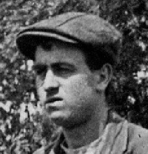
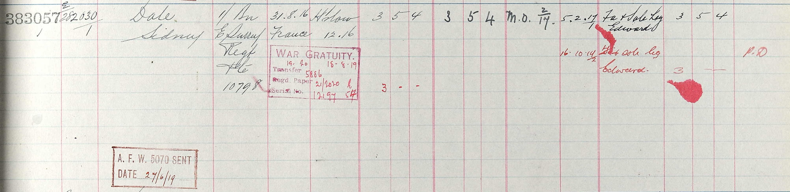
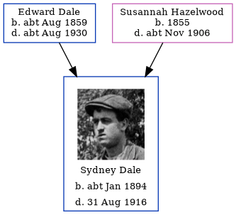

Sydney Dale cJan 1894 - 1916
[ Home ] | [ Calendar ] | [ Surnames Index ] | [ Errors ] | [ Family History ]An agricultural labourer and the child of Edward Dale (a labourer ag) and Susannah Hazelwood, Sydney Dale, the second cousin twice-removed on the father's side of Nigel Horne, was born in Chartham, Kent, England c. Jan 18941,2,3,4 and baptised there at St Mary on 21 Jan 1894.
During his life, he was living at Shalmsford Street in Chartham on 31 Mar 19011 and on 2 Apr 19117. During 1916, he was serving in the army (regiment: East Surrey Regiment; Rank: Private; Service number: 10798).
He died on 31 Aug 1916 at Delville Wood, Somme, Hauts-de-France, France3,5,6.
Parents
- Edward William was born c. Aug 1859
- Susannah was born in 1855
Citations
- 1901 England, Wales & Scotland Census - Findmypast (was age 7 and the son of the head of the household)
- British Army Service Records - Findmypast
- Commonwealth War Graves Commission Debt Of Honour - Findmypast
- England & Wales births 1837-2006 - Findmypast
- Soldiers Died In The Great War 1914-1919 - Findmypast
- http://www.kentfallen.com/PDF%20reports/CHARTHAM.pdf
- 1911 Census for England & Wales - Findmypast (was age 17 and the son of the head of the household)
Media
Sydney Dale

UK, Army Registers of Soldiers' Effects, 1901-1929

British Army Service Records - GBM/WO363-4/7284955/27/398
Commonwealth War Graves Commission Debt Of Honour - GBM/CWGC/ROLLOFHONOUR/000232445
British Army, East Surrey Regiment 1899-1919 - GBM/SURREY/EAST/ORDERS/002050
England & Wales births 1837-2006 - BMD/B/1894/1/AZ/000143/171
Soldiers died in the Great War 1914-1919 - GBM/WWISD/0134171
Britain, Campaign, Gallantry & Long Service Medals & Awards - GBM/MCI/1081451
1911 Census For England & Wales - GBC-1911-RG14-04302-0143-4
British Army, East Surrey Regiment 1899-1919 - GBM/SURREY/EAST/INDEX/001068
Kent Baptisms - GBPRS/CANT/B/96194951
England Births & Baptisms 1538-1975 - R_885426298
Family Tree
Map
Generated by ged2site. Last updated on Jul 3, 2024
Known Issues
Parent Edward is listed in the residence for 1 Aug 1903, but this child is not
Location for "military service" on 1916 is empty